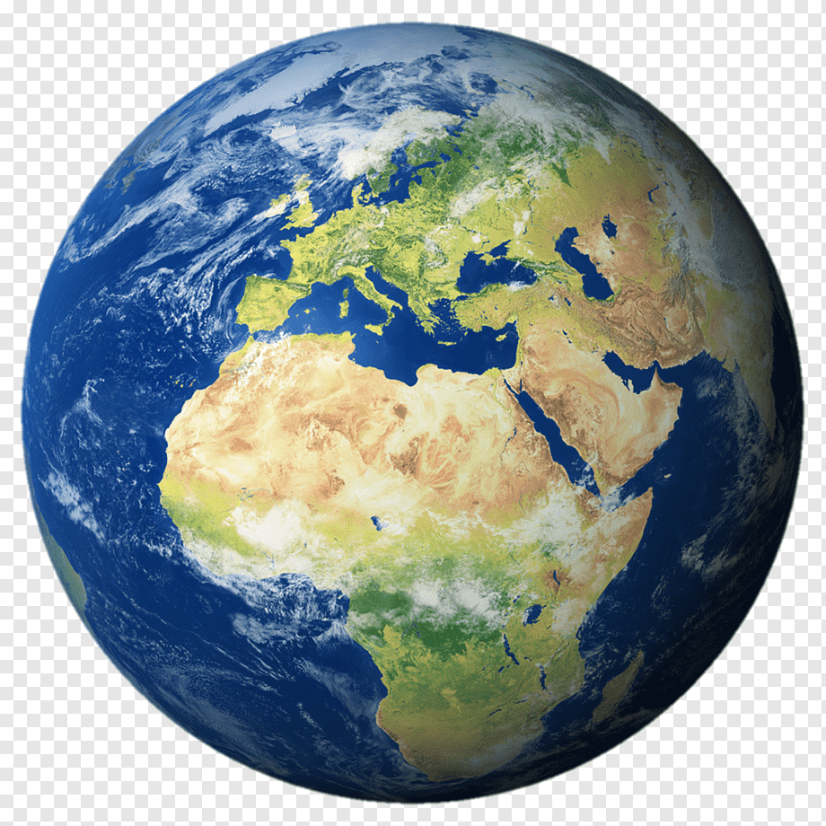
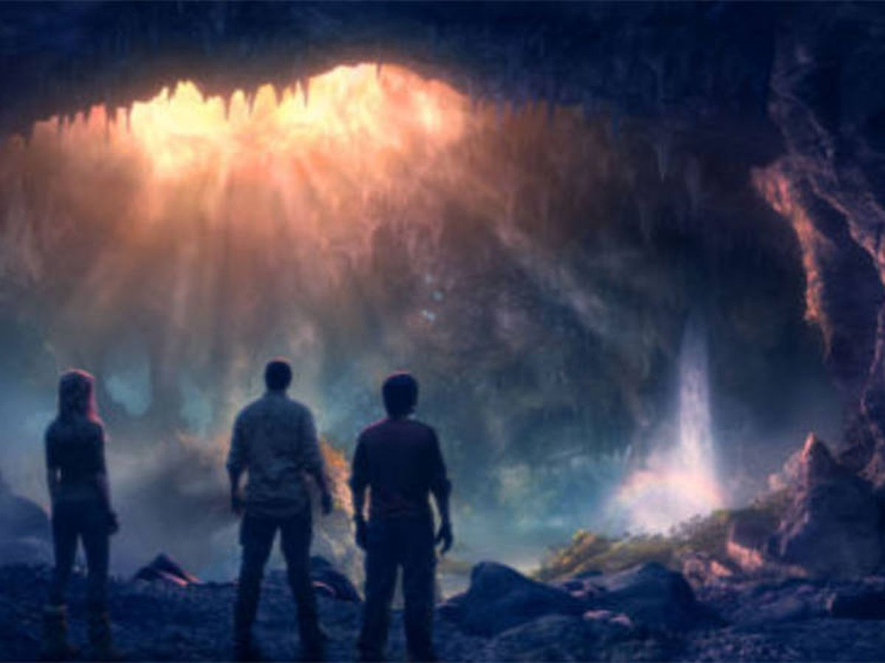
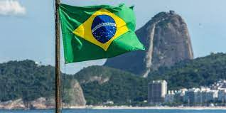
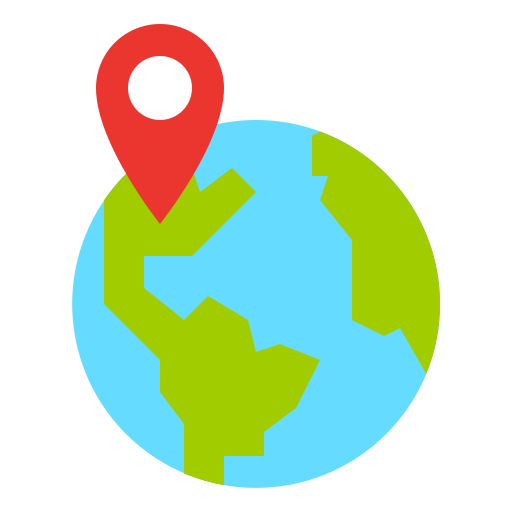

Para mi viajar es muchas cosas, depende de en que época o por que lo hago, a veces viajo para
relajarme, como cuando voy a la playa donde lo único que hago es descansar y ver la arena y el
mar o también viajar para hacer cosas como equitación, donde al viajar no tengo tanto tiempo
para disfrutar de los lugares a los que voy, pero igual paso un muy buen rato o mi favorito
viajar para conocer, ya sea conocer un nuevo pais, estado o ciudad siempre es muy enriquecedor y
divertido ir a un lugar nuevo y dejarte impresionar por lo que este te ofrece, puede ser su
arquitectura, belleza natural, cultura o la forma de vivir de las personas que viven ahí.
Viajando podras conocer cada rincon del mundo.
Investigación
12/11/22
Paises europeos con más turistas
1. Francia: Francia es líder mundial en turismo. Con 85 millones de turistas, es el país que más
turistas extranjeros recibe. París es la capital europea más visitada: todos
conocemos los grandes monumentos como la Torre Eiffel, el Louvre o zonas como los
Campos Elíseos. Hay muchos lugares más atractivos que París. Ciudades como Niza o
Marsella en el Mediterráneo, por ejemplo, son muy visitadas. Pero, más allá, hay
otras pequeñas localidades con mucho encanto, como Aviñón (con una gran fiesta en
julio), Les Machines de L'ile en Nantes y los Castillos del Loira. Por si fuera
poco, hay otras razones para visitar Francia en invierno: esquiar en los Alpes,
visitar Burdeos y Toulouse o visitar los Pirineos son algunas de las grandes
ciudades y rincones nevados que millones de turistas no se perderán.
Francia, en Europa Occidental, abarca ciudades medievales, villas alpinas
y playas mediterráneas.
2. España: Recibe aproximadamente 83 millones de turistas internacionales anualmente y
actualmente es el segundo país más visitado de Europa. Como todos sabemos, contamos
con impresionantes catedrales y museos como la Sagrada Familia y el Prado, ambos
lugares emblemáticos visitados por miles de personas cada día. Barcelona es muy
popular: se centra en atractivos recorridos por la ciudad y la playa, así como
impresionantes monumentos. Madrid es conocida por la Feria Internacional de Turismo
(FITUR), una concentración de importantes eventos y congresos internacionales.
Sevilla, Valencia, Zaragoza, Málaga, Bilbao y Córdoba son otros destinos urbanos
fuertes.
Por otro lado, además del turismo de esquí, el país cuenta con muchos atractivos
famosos, como el Camino de Santiago, una ruta de peregrinación por el norte que
resulta inolvidable para miles de turistas. Asimismo, Canarias y Baleares en el
Océano Atlántico y el Mediterráneo respectivamente ofrecen un clima inigualable para
tomar el sol y pasar unas vacaciones en la playa.
Los turistas en Italia, por último, disfrutan de una rica y variada
gastronomía y cultura con historia
3. Italia: 60 millones de turistas visitan Italia cada año. Su oferta va más allá de las playas
del Mediterráneo y está arraigada en la cultura: grandes capitales europeas como
Roma hicieron las delicias de millones, y aquí se encuentra el Coliseo o las ruinas
del Monte Palatino, la Basílica de San Pedro y la famosa Fontana de Trevi. En las
afueras de la capital se encuentra Ostia Antica, un antiguo puente romano, un lugar
que no dejará indiferente a nadie. Florencia, por otro lado, es un paraíso para
todos los amantes del arte con una impresionante colección de museos y exposiciones.
Milán también es considerada una capital financiera, mientras que puedes navegar por
los canales en una ciudad como Venecia.
España es un ode los paises favoritos par alos europeos del norte quienes
quieren disfrutar del sol y la palya en el veranoAnonimo
Cuanto abarcan estos paises del turismo mundial
Francia, España e Italia reciben 244 de los 1446 millone sde turistas del mundo al año
Europa es un ade las regiones más viasitadas del mundo por su alto valor
historico y cultural
Madrid
4/feb/2023
Madrid la mejor experiencia de mi vida
Si alguna vez te has preguntado cuál es la mejor ciudad que he visitado en mi vida, la respuesta es sencilla: Madrid. Desde el momento en que pisé suelo español, supe que esta ciudad se convertiría en un lugar muy especial en mi corazón.
Lo que más me gustó de Madrid fue la combinación perfecta entre historia y modernidad. La ciudad cuenta con impresionantes museos como el Museo del Prado y el Museo Reina Sofía, donde se pueden admirar obras de arte de los grandes maestros españoles e internacionales. Pero al mismo tiempo, Madrid es una ciudad vibrante y llena de vida, con una escena nocturna animada y excelentes opciones de comida y bebida.
Además, la gente de Madrid es amable y acogedora. Me encantó caminar por sus calles y sumergirme en su cultura, hablando con la gente local y aprendiendo más sobre su estilo de vida. La ciudad también es segura y fácil de navegar, lo que la hace perfecta para viajar solo o en pareja.
En resumen, Madrid es una ciudad que ofrece algo para todos, desde cultura hasta diversión, y es por eso que es, sin duda, la mejor experiencia de viaje que he tenido en mi vida. ¡Te la recomiendo altamente!
Madrid por la noche
Paranormal
30/01/2023
Lugares Embrujados
El mundo está lleno de lugares misteriosos y embrujados que atraen a los viajeros más valientes en busca de experiencias paranormales. Si estás buscando emociones fuertes en tus viajes, aquí te presentamos algunos de los destinos más aterradores del mundo.
Transilvania, Rumania
Transilvania, en Rumania, es el hogar de una de las figuras más icónicas del terror: el Conde Drácula. El Castillo de Bran, en la ciudad de Bran, es conocido como el Castillo de Drácula y es uno de los principales atractivos turísticos de la región. La leyenda dice que el espíritu del conde todavía ronda los pasillos del castillo en busca de víctimas para su sed de sangre. Además del Castillo de Bran, también puedes visitar el Castillo de Peles, en Sinaia, que es considerado uno de los lugares más embrujados de Rumania.
Salem, Massachusetts, Estados Unidos
Salem es conocido por sus juicios de brujería en el siglo XVII, que resultaron en la ejecución de varias personas acusadas de brujería. Hoy en día, Salem atrae a muchos turistas que buscan experimentar lo paranormal. Puedes visitar la Casa de las Siete Chimeneas, que se cree que está encantada por los fantasmas de las víctimas de los juicios de brujería. También puedes visitar el Cementerio de la Colina de Gallows, donde se llevaban a cabo las ejecuciones.
Castillo de Chillingham, Inglaterra
El Castillo de Chillingham, ubicado en el norte de Inglaterra, es conocido como uno de los lugares más embrujados del país. Se dice que los fantasmas de los antiguos habitantes del castillo todavía vagan por sus pasillos. La Sala de Tortura es uno de los lugares más aterradores del castillo, ya que se dice que el espíritu de un antiguo torturador todavía está presente allí. También se dice que se pueden escuchar los gritos de las víctimas que fueron torturadas allí.
Aokigahara, Japón
Aokigahara, también conocido como el Bosque de los Suicidios, es uno de los lugares más siniestros de Japón. El bosque ha sido el escenario de muchos suicidios y se cree que está habitado por los espíritus de las personas que se quitaron la vida allí. Se dice que las brújulas no funcionan en el bosque y que es fácil perderse en su densa vegetación. Si visitas el bosque, debes tener mucho cuidado y respetar el lugar.
Isla de las Muñecas, México
La Isla de las Muñecas, ubicada en los canales de Xochimilco, cerca de la Ciudad de México, es un lugar espeluznante lleno de muñecas colgadas de los árboles. La leyenda cuenta que el dueño de la isla, Don Julián Santana, encontró el cuerpo de una niña ahogada en los canales y que comenzó a colgar muñecas
Lugares Paranormales
Luisito Comunica
1/02/2023
Viajes de Luisito Comunica
Luisito visitó varios países africanos, incluyendo Marruecos, Egipto, Kenia y Tanzania, y compartió sus experiencias en una serie de videos emocionantes. Durante su viaje, Luisito experimentó la cultura y la comida local, interactuó con la gente y exploró algunos de los paisajes más impresionantes del mundo.
En Marruecos, Luisito exploró las calles de Marrakech, una de las ciudades más antiguas y vibrantes del país. También visitó las dunas de arena del Sahara, donde tuvo la oportunidad de montar en camello y ver un hermoso atardecer. En Egipto, Luisito visitó las famosas pirámides de Giza y exploró la ciudad de El Cairo.
En Kenia, Luisito visitó el Parque Nacional Masai Mara, uno de los lugares más icónicos para ver la vida salvaje en África. Durante su safari, pudo ver de cerca a los "cinco grandes" de África, incluyendo leones, elefantes, rinocerontes, búfalos y leopardos. También visitó una aldea masai y aprendió sobre la cultura y las tradiciones del pueblo masai.
En Tanzania, Luisito tuvo la oportunidad de subir al Monte Kilimanjaro, la montaña más alta de África. La caminata fue muy desafiante, pero al llegar a la cima, Luisito experimentó una vista increíble y una sensación de logro.
En cada uno de los países que visitó, Luisito se tomó el tiempo para interactuar con la gente local y aprender sobre su cultura y sus tradiciones. También experimentó la comida local, incluyendo platos de cordero y tajín en Marruecos, falafel y shawarma en Egipto, y chapati y ugali en Kenia.
En resumen, el viaje de Luisito Comunica por África fue una de sus aventuras más emocionantes. Durante su viaje, experimentó la cultura y la comida local, interactuó con la gente y exploró algunos de los paisajes más impresionantes del mundo. Este viaje fue un ejemplo perfecto de la pasión de Luisito por explorar y compartir el mundo con su audiencia en línea.
El Bebe de Luisito Comunica
Viajar al Espacio
3/02/2023
Viajando al Espacio
¿Se puede viajar al espacio como en las películas? Es una pregunta que muchas personas se han hecho alguna vez en su vida. La respuesta no es sencilla, pero en este artículo intentaré explicar lo que se sabe hasta ahora sobre la posibilidad de hacer un viaje al espacio que se parezca a los que vemos en las películas de ciencia ficción.
En primer lugar, hay que tener en cuenta que los viajes espaciales que vemos en las películas son muy diferentes de los viajes que se han hecho hasta ahora en la vida real. Los astronautas que han viajado al espacio han ido a bordo de naves espaciales muy sofisticadas, pero su experiencia de viaje es muy diferente a lo que vemos en las películas.
Por ejemplo, en las películas vemos naves espaciales que pueden viajar a velocidades increíbles y que pueden hacer maniobras imposibles. En la vida real, las naves espaciales tienen que viajar a velocidades muy altas para escapar de la gravedad de la Tierra, pero no pueden hacer maniobras muy extremas.
Además, en las películas vemos que las naves espaciales tienen sistemas de soporte vital muy avanzados que permiten a los personajes vivir en el espacio durante mucho tiempo. En la vida real, los astronautas tienen que llevar consigo todo lo que necesitan para sobrevivir en el espacio, como aire, agua y alimentos, y su estancia en el espacio está limitada por la cantidad de suministros que pueden llevar consigo.
Otro factor importante a tener en cuenta es que los viajes espaciales que se han hecho hasta ahora son muy costosos y están limitados a un pequeño número de personas. Para hacer un viaje al espacio como en las películas se necesitaría desarrollar tecnologías muy avanzadas y encontrar formas de reducir los costos.
Sin embargo, hay algunas iniciativas en marcha que podrían llevar a viajes espaciales más parecidos a los de las películas en el futuro. Por ejemplo, empresas como SpaceX y Blue Origin están trabajando en el desarrollo de cohetes reutilizables y en la exploración del espacio profundo. También hay iniciativas para desarrollar turismo espacial, que permitiría a personas comunes viajar al espacio por un precio.
En conclusión, aunque todavía no es posible viajar al espacio como en las películas de ciencia ficción, hay iniciativas en marcha que podrían llevar a un futuro en el que los viajes espaciales sean más accesibles y emocionantes. A medida que se desarrollen nuevas tecnologías y se encuentren formas de reducir los costos, es posible que veamos viajes espaciales más parecidos a los de las películas en el futuro.
Es posible viajar al Espacio
Viaje al centro de la tierra
3/02/2023
¿Es posible?
El viaje al centro de la Tierra es una de las fantasías más antiguas del ser humano. Desde la Antigüedad, los filósofos han imaginado un mundo subterráneo lleno de maravillas y misterios. Pero, ¿es posible viajar al centro de la Tierra? ¿Cómo sería ese viaje?
En primer lugar, es importante tener en cuenta que la Tierra tiene un diámetro de 12.742 kilómetros, por lo que llegar al centro de la Tierra no es una tarea sencilla. La capa externa de la Tierra, llamada corteza, tiene un grosor de unos 30 kilómetros en promedio. Debajo de la corteza se encuentra el manto, una capa de roca y magma que se extiende hasta una profundidad de unos 2.900 kilómetros. Finalmente, en el centro de la Tierra se encuentra el núcleo, compuesto principalmente de hierro y níquel.
Para llegar al centro de la Tierra, sería necesario excavar un túnel de unos 6.000 kilómetros a través del manto y el núcleo. Esto es prácticamente imposible con la tecnología actual, ya que el manto es muy caliente y viscoso, y el núcleo es sólido pero sometido a presiones y temperaturas extremas.
Sin embargo, si imaginamos un escenario hipotético en el que fuera posible llegar al centro de la Tierra, ¿cómo sería ese viaje? En primer lugar, sería necesario proteger a los viajeros del calor y la presión extrema del manto y el núcleo. Para ello, se necesitarían materiales avanzados capaces de resistir estas condiciones extremas.
Además, el viaje al centro de la Tierra sería muy peligroso debido a la posibilidad de encontrarse con magma y roca fundida en el camino. También sería difícil encontrar fuentes de energía y suministros en el camino, por lo que los viajeros tendrían que llevar consigo todo lo que necesitan para sobrevivir.
En resumen, aunque el viaje al centro de la Tierra es una fantasía que ha cautivado la imaginación humana durante siglos, en la práctica es casi imposible con la tecnología actual. Sin embargo, a medida que se desarrollen nuevas tecnologías, es posible que algún día se encuentren formas más eficaces y seguras de explorar las profundidades de la Tierra. Mientras tanto, podemos seguir imaginando y soñando con lo que podría haber en las profundidades subterráneas de nuestro planeta.

Pelicula muy famosa
Brasil
3/feb/2023
Recomendaciones en Brasil
Brasil es un país con una rica cultura y una gran diversidad geográfica, ofreciendo una amplia variedad de opciones para aquellos que desean visitarlo. Desde las playas impresionantes hasta las montañas espectaculares, hay algo para todos los gustos y presupuestos. Si estás planeando un viaje a Brasil, aquí hay algunas recomendaciones para ayudarte a planificar tu itinerario.
En primer lugar, la ciudad de Rio de Janeiro es un lugar imprescindible para visitar. Conocida por su impresionante paisaje natural, incluyendo la famosa playa de Copacabana y el Cristo Redentor, Rio es una ciudad vibrante llena de vida y cultura. Además, la ciudad es famosa por su animada escena nocturna y su carnaval anual, que es una de las celebraciones más grandes y espectaculares del mundo.
Otro lugar que recomendamos es el Parque Nacional de Iguazú, que se encuentra en la frontera entre Brasil y Argentina. Este parque es conocido por sus impresionantes cataratas, que ofrecen vistas espectaculares y una experiencia única para los visitantes. Además, el parque también es hogar de una gran variedad de flora y fauna, lo que lo convierte en un destino popular para los amantes de la naturaleza.
Para aquellos que prefieren la naturaleza a las ciudades, el Amazonas es un lugar ideal para visitar. Este vasto ecosistema es el hogar de una gran variedad de especies animales y vegetales, y ofrece una experiencia única para aquellos que buscan aventura y exploración. Además, también puedes visitar los pueblos ribereños y aprender sobre la cultura local y la vida en el Amazonas.
Si prefieres la cultura y el arte, la ciudad de Salvador es un lugar ideal para visitar. Conocida por su rica historia y su vibrante cultura afro-brasileña, Salvador es un lugar vibrante y animado lleno de música, baile y arte. Además, la ciudad es famosa por su arquitectura colonial y sus iglesias barrocas, lo que la convierte en un destino popular para los amantes de la historia y el arte.
En conclusión, Brasil es un país con mucho que ofrecer a los viajeros, con una amplia variedad de opciones que van desde la naturaleza hasta la cultura y el arte. Si estás planeando un viaje a Brasil, esperamos que estas recomendaciones te ayuden a planificar tu itinerario y a aprovechar al máximo tu tiempo en este hermoso país.

Brasil es un pais muy lindo
Top 10
destinos turisticos de Latinoamerica
04/10/22
Los 10 destinos turisticos Latinoamericanos más anhelados del año segun forbes
Ciudad de México, México
Santiago, Chile
San José, Costa Rica
Machu Picchu, Perú
Los Cabos, Baja California
Río de Janeiro, Brasil
Mendoza, Argentina
Punta Cana, República Dominicana
Cartagena de Indias, Colombia
Cancún, México
Podemos ver como la mayoria de estos destinos son lugares de playa, ya que en latinoamerica
tenemos muy buenas playas y el ambiente en ellas es de lo mejor.
Las paradisiacas playas de mexico y Latinoamerica.
 Viajar
Viajar
 Investigación
Investigación
.png) Madrid
Madrid
 Luisito Comunica
Luisito Comunica Brasil
Brasil
 Video
sobre tomar vuelos
Video
sobre tomar vuelos Sitios
de apoyo
Sitios
de apoyo